Tools for working with AI agents and reading arguments, plus research and reference works: a Byzantine atlas, a medical evidence map, two evidence checks, a market-research terminal and a tool that turns a Claude session into a script and a menu-bar text helper.
A flight recorder for AI coding agents. It captures what Claude Code actually did, prompts, tool calls, file edits, failures and subagent handoffs, and lets you replay a session, trace a file change back to the agent that made it, and see how a failure was recovered. Nothing leaves the Mac.
The flight recorder. Every track of a session on one timeline, played back at up to 20x, with the inspector showing what led to a failed test and what came next.
The problem
AI coding agents now run for long stretches, start subagents and edit dozens of files. When something breaks, the only record is a scrolling transcript. There is no way to see the session as a whole, ask which agent changed a file, or tell what was observed from what someone guessed afterward.
What it does
Capture, local only: opt-in hooks and transcript import into a local database, with privacy levels and redaction.
Replay on a single timeline, with an inspector that links each event to its cause and result.
File forensics, agent topology and a failure observatory that groups repeated failures and reconstructs recovery.
A safe installer that shows a line-by-line diff of the Claude settings file and backs it up before changing anything.
The failure observatory. Observed events and inferred steps are marked differently, and your own hypotheses are kept apart from both.The same recorder in a white skin. Nine skins are available, chosen in Settings rather than in the working screens.
How it was built
A native macOS app in SwiftUI over SQLite with full-text search. I wrote the specification package and asked for it to be as sleek as a flight instrument; Claude Code built the app, the hook relay and the synthetic sessions, and ran the builds on my Mac through Remote Control.
R0202 / 16Native Mac app · Local AI
AgentForge
local AI agents
A Mac app for running AI agents on models that live on your own computer. You point an agent at a project folder, choose how much it may touch, and approve each change. It also covers chat, chat with your documents and visual agent workflows, all inside a retro terminal look built from text characters.
Download for MacSigned, notarized and self-updating. Needs Ollama, which the first-run setup installs.
Lines of Swift
10,442
Pages
19
Agent harnesses
3
Automated checks
32
Releases shipped
4
Cloud accounts required
0
Mission Control. The bar across the top tracks processor, graphics, memory, disk, network, temperature and battery in real time.
What it does
Agents on your own models
A built-in agent lists, reads, searches, writes and edits files and runs commands, using a model running locally through Ollama. Access is chosen per session: read only, ask before each change, or auto-approve edits. Every change is checkpointed and can be undone.
Three harnesses
The same launcher also drives Claude Code and Codex, either on the user's own cloud account or pointed at a local model. Skills and MCP tools plug in, and a timed-out run can be continued, with the agent told which files the last attempt already changed.
Model Lab
Grades each installed model on whether it can drive an agent: does it make real tool calls, how fast does it write, and how long does it take to wake. The agent picker defaults to the best-graded model.
Flows
A drag-and-drop canvas for wiring agents, prompts, routers, human approval gates and shell steps into a workflow, with zoom, fit, a minimap and ten starter templates. One template has an agent edit AgentForge itself, rebuild it and relaunch it.
Library
Chat with your own documents. PDFs, Word files and code are split up and indexed with a local embedding model, and answers cite the passage they came from. Agents can search the library too.
The fun parts
Idea Forge, a slot machine that rolls a project idea; ASCII Studio with effects and 24 animated creatures; Sprite Lab, where a model can draw a sprite from a prompt; a music visualizer; and an Agent Theater where running agents appear as characters.
A real read-only run on gemma4:12b: the agent lists the folder, reads the README and the code, then explains the project. It took about six minutes on a base M2.
Flows: a router sends a request to a bug-hunting agent, a planner or an answerer.Model Lab: which local models can actually drive an agent.Idea Forge: lock or edit the reels, pull the lever, and a local model writes the pitch.ASCII Studio: creatures move around a scene on their own.The spinning donut, one of nine text effects you can export.Music visualizer, radial burst mode. It listens to the mic or the Mac's own audio.Appearance: five palettes, thirteen animated backdrops and screen effects.The same dashboard in the Matrix palette, after an agent finished.
Making small local models usable as agents
Local models fail as agents in quiet ways. Some write a tool call as text instead of making it, some announce the next step and then stop, and some repeat the same action forever. The harness recovers tool calls written as text, nudges a model that promised an action it did not take, redirects and then stops repeat loops, and frees memory and reloads the model onto the graphics chip before a long run. Model Lab measures which models need this help, so the default is one that does not.
How it was built
Built with Claude Code as a native SwiftUI app with no third-party code apart from the Sparkle updater. Every animation is plain text redrawn by a capped clock, and everything pauses when the window is in the background. Releases are signed with my Apple Developer ID, notarized by Apple and served from a Cloudflare Worker that also hosts the update feed. A feedback button attaches diagnostics and recent crash reports, with personal paths removed.
R0303 / 16Desktop app for Mac, Windows and Linux · Local AI
AgentForge Rust Edition
cross-platform agents
AgentForge rebuilt in Rust so it runs on Mac, Windows and Linux, reskinned in rusted iron and forge orange. It carries every feature of the Mac app, then goes further: agent runs that survive a crash and can be replayed step by step, a live preview of what an agent is building, an arena where agents compete on the same task, an eval suite to measure them, cloud models, a cost tracker, a phone remote, and visualizers simulated in Rust.
Mission Control in the RUST palette. The Agent Theater board shows each run with what it's doing now, how far it has provably got, and Approve/Deny when it needs me.
What changed from the Mac app
Three operating systems
A Rust backend (Tauri) with a Svelte interface replaces SwiftUI. Agents, file tools, Ollama, MCP servers, document search and hardware readings all run in Rust, so they behave the same on Mac, Windows and Linux. A first-run setup finds Ollama or walks through installing it on each one.
Cloud models and images
Local models stay the default, but chat and agents can also use OpenAI, Anthropic, Gemini, DeepSeek, Kimi, Mistral, Groq, xAI, OpenRouter or any OpenAI-compatible server. Keys stay in the system keychain, and a notice appears whenever text is about to leave the computer. Image Studio generates and edits pictures, also from chat with /image.
Cost and approvals
Every model call is logged with its tokens and cost: the provider's own figure when it reports one, otherwise tokens times a price I set, and $0 for local models. Every pending approval, from any agent or workflow, lands in one queue where it can be approved or denied.
What it adds for running agents
See what it's building
When an agent makes a web page or a game, a preview pane shows it live beside the run and reloads as files change. A plain-language view reads like a chat (what it's doing now, a checklist, “Wrote game.js”, “Ran tests: 12 passed”). At the end a result card shows a screenshot, the files changed and an undo button, and a follow-up box continues the same work.
A Reality Meter, not a progress claim
Every run shows how far the work has provably got, from evidence the app recorded itself rather than from what the model says. It only reads Tested or Verified when a real test command passed after the last edit.
Runs that survive a crash
A run's settings, history and file checkpoints are saved as it goes. If the app quits mid-run, the run comes back as interrupted, with Undo All still working and a Resume that continues without redoing finished edits.
Flight Recorder
Any finished or interrupted run can be replayed step by step with a scrubber, showing the tool calls, file changes, time, tokens and cost at each point, with a jump to the first failure. A Context panel shows exactly what went into the model.
Agent Arena
One objective goes to two or three agents, each with its own model or harness and its own copy of the project. Their diffs, test results, time and cost sit side by side, and nothing reaches the project until I accept one.
Evals
Ten small real coding tasks run against any model and harness, scored pass or fail with time, steps and cost, and two runs can be compared task by task with regressions in red. A failed agent run can be saved as a new eval task in one step.
Describe a flow, pick a model
Describe a job in plain words and a model drafts it as a Flow on the canvas, with a banner flagging anything risky before it runs. An Autopilot setting (Local, Economy, Best or Manual) fills any empty model choice and says why it picked each one.
A new Agent Theater
Mission Control shows live runs as a board of cards, with a thumbnail, a plain “Now” line, a progress ring and Approve/Deny buttons, or as a 3D workshop where a character for each agent works at a bench and reacts to what its run is doing.
Four agent harnesses and a phone remote
Gemini CLI joins AgentForge's own agent, Claude Code and Codex. AgentForge Remote puts approvals, chat and agents on my phone over my private Tailscale network, and Image Studio can now generate pictures locally too.
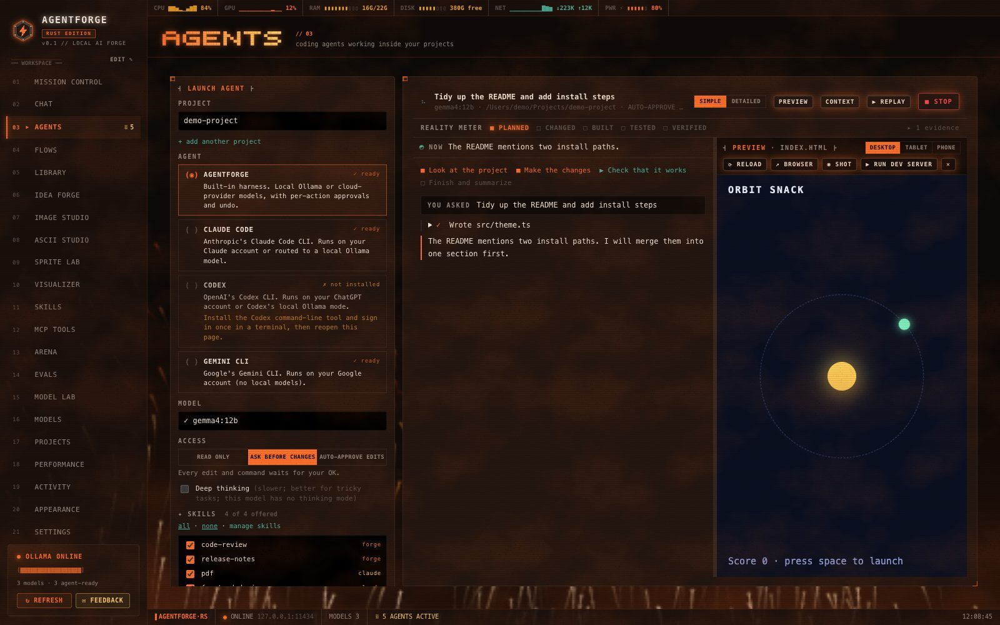
An agent run in the plain-language view, with the Reality Meter along the top and the game it's building running live in the preview pane.
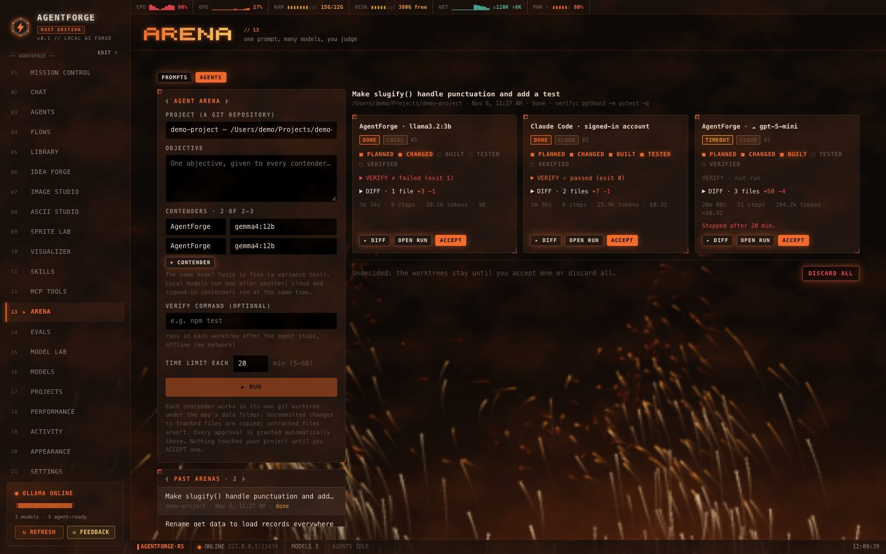
Agent Arena: three agents, one task, each in its own worktree. I accept one, or discard all.
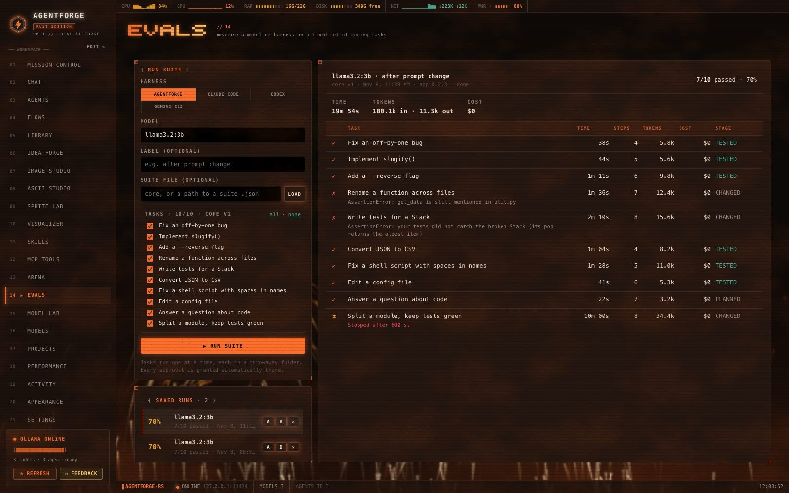
Evals: ten real coding tasks, scored with time, steps and cost.
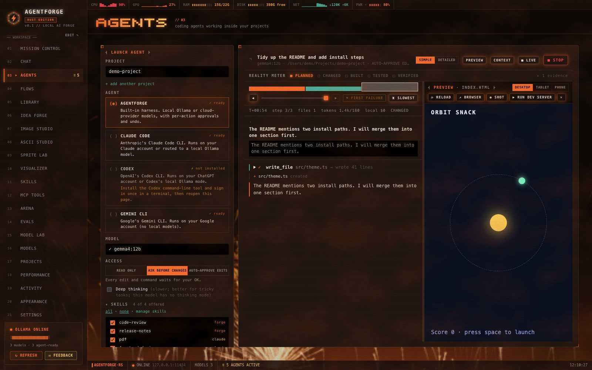
Flight Recorder: scrub through a run step by step.
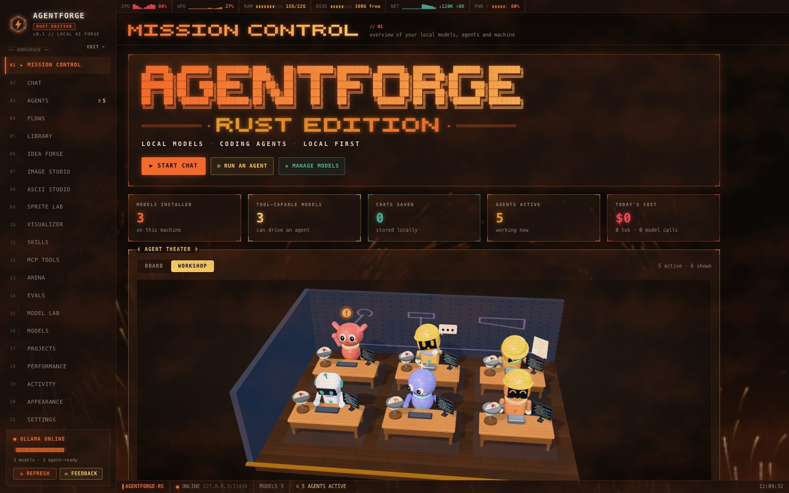
The Theater's Workshop tab: a character for each run works at its bench, and raises a hand when it needs an approval.Chladni Plate: sand on a vibrating plate settles into the real nodal pattern of the strongest note, and re-forms when the note changes.
Visualizers simulated in Rust
Seventeen effects are written in Rust and compiled to WebAssembly. Six of them listen: Chladni Plate, Ferrofluid, Forge Hammer, Iron Filings, Murmuration and Molten Pour. A test showed Rust drawing every pixel was far slower than the graphics chip, so these simulate at a low resolution and scale up as crisp pixels, which keeps them smooth and suits the look. Each one doubles as a window background that moves on its own, or reacts to music if you switch that on. The audio can come from the microphone, a file, or the computer's own output, captured natively on all three systems.
Ferrofluid: liquid metal that spikes with the bass.Forge Hammer: every beat is a strike, and the sparks cool as they fly.Murmuration: thousands of starlings that tighten with the volume and scatter on the beat.Flows, ported with all ten starter templates.Performance, with today's and this week's spend.Appearance: eleven palettes, ASCII, shader and Rust backgrounds.
How it was built
Built with Claude Code, first in two days and then in milestones, each with its own plan, branch and review. One session planned the port and gave each feature its own folder in the code, then several builder agents worked in parallel on separate branches while it merged, tested and released them. Features move between the editions: the cost tracker and approvals queue started in the Mac app, and the newer agent features are built here first. The interface screenshots here use the app's built-in demo data.
R0404 / 16Native Mac app · Menu-bar utility
Highlight Bar
AI actions on selected text
Highlight text in any Mac app, press a shortcut, and a small panel appears beside it with actions: clean it up, rewrite it in my voice, turn it into a calendar event, a table or JSON, or have it explained. The result goes straight back into the text, with no copying and pasting between apps.
Runs on a Mac, not on this site. Built and working on my own Mac; not released. The screenshot is the real app.
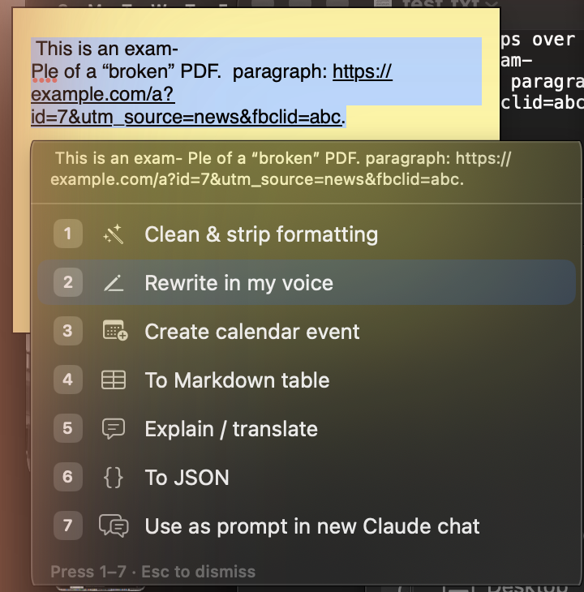
The panel appears next to the selection. Press 1 to 7 to pick an action, or Esc to dismiss.
The problem
Using AI on a few words of text means copying them, switching to another app, pasting, waiting, copying the answer and switching back. For a one-line cleanup that is more work than doing it by hand, so most of the time you don't.
What it does
Highlight text in any app and press ⌘’. A small panel opens next to the selection with numbered actions:
Clean & strip formatting: fixes PDF line breaks, smart quotes, tracking links and stray spaces, entirely on the Mac.
Rewrite in my voice: Claude rewrites it shorter and more direct, streamed into a preview. Return replaces the original.
Create calendar event: finds the date and time in the text and adds the event.
To Markdown table and To JSON: done locally for tidy delimited text, with Claude for messy prose.
Explain / translate: shows the answer on a card over the text and leaves the original alone.
Use as prompt: opens a new Claude chat with the selection.
Decisions behind it
Edits in place. The text is read and replaced through macOS Accessibility, so undo still works and the clipboard is never touched.
A fallback for apps that block that. Electron apps such as Slack and VS Code don't expose their text, so it sends a quick copy and paste instead, saving and restoring the whole clipboard around it.
Doesn't steal focus. The panel is a non-activating window, so the app you were typing in stays in front, with your cursor and selection intact.
Calendar access is write-only. It can add events but cannot read your calendar.
Local first. Cleanup and the simple conversions run on the Mac; Claude is called only for the actions that need it.
What the picture shows
The panel open over a sticky note holding a deliberately messy sentence: a word split across a line, curly quotes, double spaces and a link full of tracking parameters. It is the real app with invented text.
How it was built
A native macOS menu-bar app in Swift 6 and SwiftUI, with the panel in a non-activating NSPanel. Built with Claude Code and tested on my own Mac.
R0505 / 16Native Mac app · Search
Atlas
private file search
Find any file on your Mac, privately. Atlas searches the text inside your PDFs, Word, Excel and PowerPoint files, email, notes and code, and finds everything else by name, type, date and size: songs by artist and album, photos by when and where they were taken, and the pictures in your Apple Photos library. Nothing leaves the computer.
Download for MacFree, 8.9 MB, for Apple silicon Macs. Not yet signed: the first time, macOS blocks it, so open System Settings → Privacy & Security and click Open Anyway.
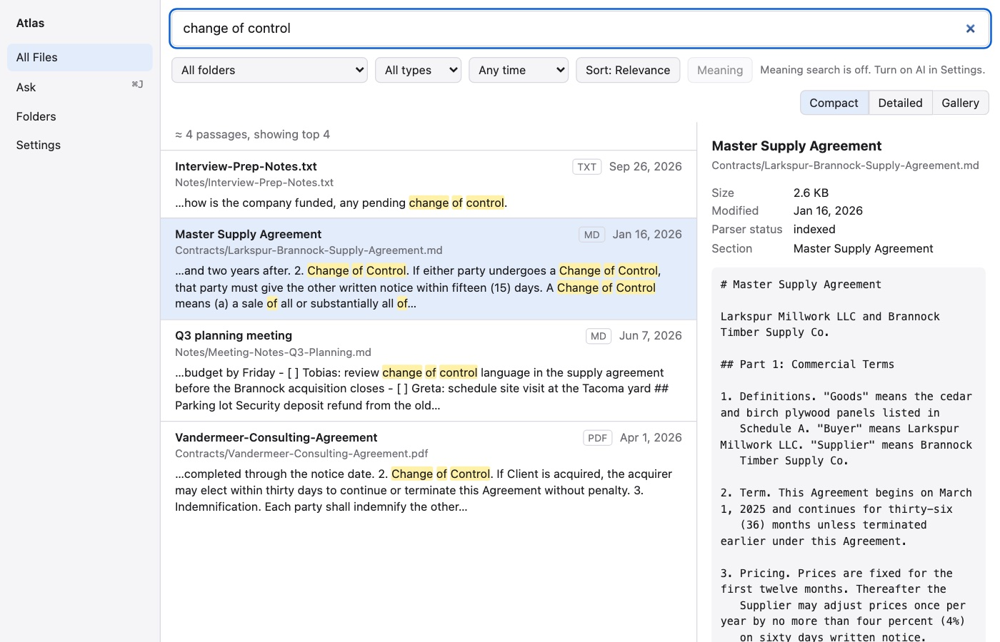
A search for “change of control” across a folder of invented documents. Each result is the passage that matched, and the file opens beside it. Shown in light mode, with the window in Apple's Liquid Glass.
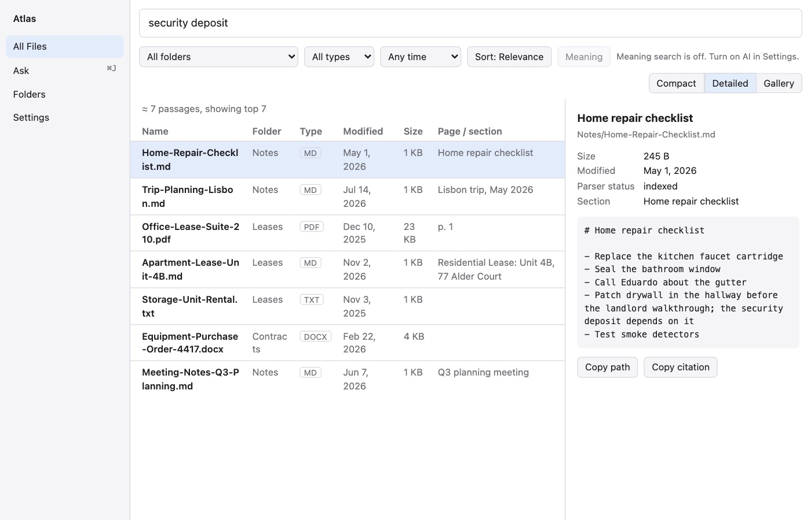
The same results as a table, with the folder, type, date, size and the page or heading where each match sits, in dark mode.
The problem
Spotlight finds files by name and guesses at their contents. When you remember a sentence but not which contract, PDF or note it was in, you end up opening files one by one. The tools that do this well usually send your documents to a server.
What it does
Searches inside files: text, Markdown, HTML, code, PDF, Word, Excel, PowerPoint, RTF and email, with the matching passage highlighted and the page or slide it is on.
Lists every other file too: music, video, photos and anything it can't read are found by name, folder, type, date and size, and filters alone can answer “every video over 1 GB”.
Reads what files say about themselves: a song's artist and album, a photo's date, camera and town (from an offline list of places, no map service), a video's length.
Apple Photos: add your Photos library and its pictures and videos are searchable like files, read through Apple's own photo framework and never changed.
Stays current: it notices when files change and updates itself in the background.
Finds by name too: Cmd+P jumps to any file by a few letters of its name.
Three ways to look: a compact list, a detailed table, or a gallery of thumbnails, with Quick Look on the space bar.
From anywhere: Cmd+Shift+Space opens a small search window over whatever app you are in.
Optional extras: reading scanned PDFs and photos of text, recognising what is in a photo (a beach, a dog, a receipt) with Apple Vision, search by meaning, and answers to questions with citations to your files, all on the Mac.
Decisions behind it
Nothing leaves the Mac. With AI off it makes no network connections at all. With AI on, it talks only to a model running on the same computer.
It never touches your files. Atlas only reads them. A folder that goes missing or can't be read is left alone, never treated as deleted.
Search works without AI. The word search is the core and is instant; the AI features are extras you switch on.
The engine is reusable. Its search core is a separate library with its own command-line tool, and Skippy now uses it to find the right files on your Mac before it answers.
What the pictures show
The screenshots are the real Atlas interface searching a folder of invented contracts, leases, notes and recipes. None of it is real data.
How it was built
Planned by Claude Fable in its own session, then built with Claude Code: Opus ran the project and reviewed the risky parts, Sonnet wrote the code and Haiku looked things up. The search core is Rust; the window is a Tauri app.
R0606 / 16Chrome extension · Tabs
Tab Bankruptcy
tab digest for Chrome
For when you have 200 tabs open. One click reads every tab, writes a one-page digest grouped by topic with a line or two and a link for each page, saves it to a searchable archive, and closes the tabs. “Reopen all” brings them back. Anything with unsaved typing is left open, and the summaries are written on your own computer.
Chrome extension. It works today as an unpacked extension and is not on the Chrome Web Store yet.
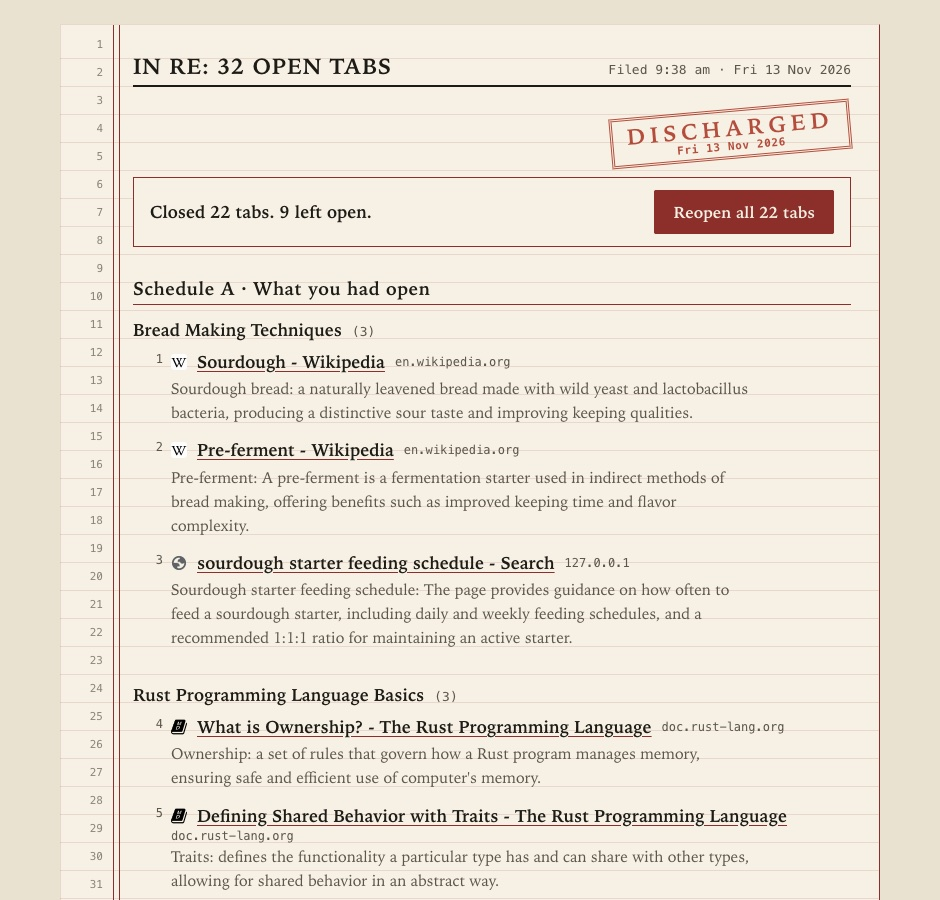
The digest in the light theme. Closed 22 tabs, 9 left open, and a button to reopen all 22.
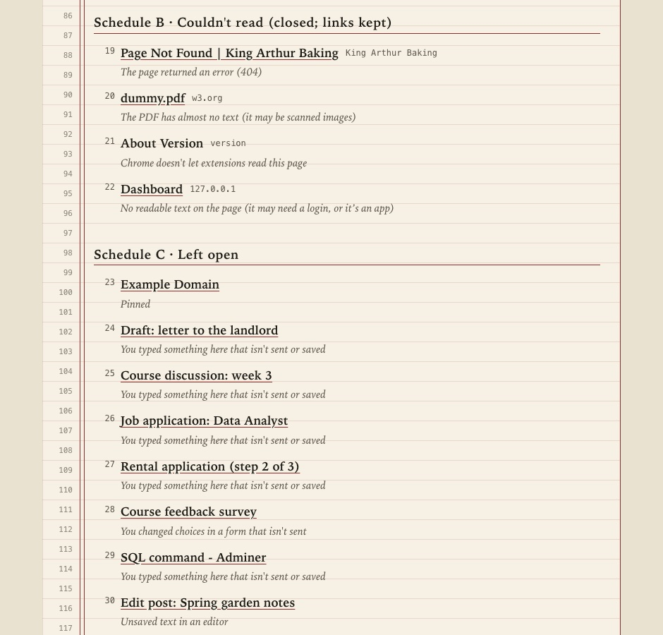
The lower half of the same digest. Schedule B is the pages it couldn’t read: closed, but with their links kept. Schedule C is every tab it left open, with the reason.
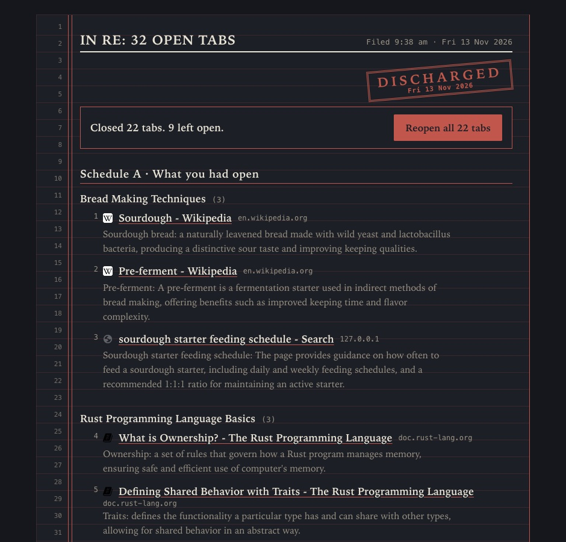
The dark theme, called the carbon copy.
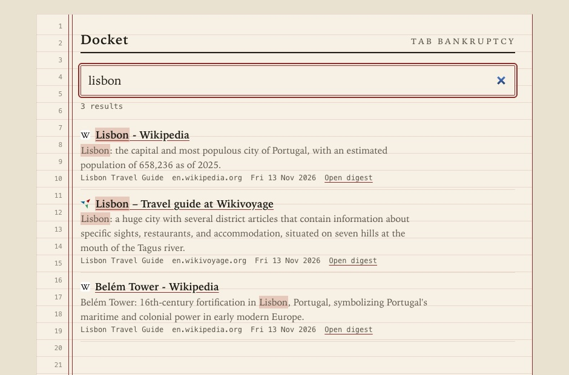
The archive, called the Docket. Searching “lisbon” finds three pages from an older digest, with the word highlighted and a link back to that digest.
The problem
Two hundred open tabs are a to-do list you can no longer read. OneTab closes them for you, but it saves only the addresses, so a month later you have a wall of links and no memory of why you kept any of them. The one free extension I found that summarizes before it closes writes a single line per tab, with no grouping, no search and no way to undo.
What it does
Reads every tab with one click: articles, YouTube descriptions, PDFs, and tabs Chrome has put to sleep.
Writes a one-page digest: grouped by topic, with a line or two and a link for each page.
Keeps an archive: every digest is saved inside the extension, and you can search all of them later.
Closes the tabs, with undo: “Reopen all” brings every one back.
Keeps the pages it can’t read: a 404 or a chrome:// page is closed too, but it is listed with its link.
What it never closes
Tabs with unsaved typing, including text typed inside embedded frames and React forms.
Pinned tabs and tabs that are playing sound.
Tabs you used while it was running.
PDFs it can’t download again, because closing one would lose it.
Every tab it leaves open is listed in the digest with the reason.
Decisions behind it
The summaries are written on your computer. By default it uses Gemini Nano, which is built into Chrome, or a model running locally in Ollama. The Auto setting never sends a page to the cloud.
Claude is opt-in. You can choose it and use your own key. It is never picked for you.
Every tab is accounted for. Each one ends up summarized, listed as unreadable, or left open with a reason, so nothing just disappears.
When in doubt, a tab stays open.
The look
The digest is a court filing on pleading paper. It is captioned “IN RE: 32 OPEN TABS”, stamped DISCHARGED once the tabs are closed, and split into three schedules: A for what you had open, B for what it couldn’t read, and C for what it left open. There is a light theme and a dark one, the “carbon copy”.
What the pictures show
The screenshots come from a real run on 32 test tabs in a separate copy of Chrome: public pages such as Wikipedia and Hacker News, plus invented ones like a half-written letter to a landlord. The summaries were written by a small model running on the same computer.
How it was built
Built with my /teambuild agent team. Opus led the project, Sonnet builders worked in parallel, each in its own copy of the code, and Haiku checked every handoff. An independent Opus review ran four rounds, and after each round a real 32-tab run in a test copy of Chrome checked the result.
R0707 / 16Reading tool
Argument X-ray
reading tool
Persuasive writing hides its structure. This tool maps a text into its thesis, claims, evidence, unstated assumptions and objections, then flags the weak links so you can see what is actually supported.
A clickable map of each text: thesis, reasons, evidence, unstated assumptions, objections and replies. Selecting a box highlights its passage, and selecting a passage selects its box.
A verdict with a grade, the weak points ranked by how serious they are, and suggested fixes. Typical findings are false dilemmas, one-off costs passed off as yearly ones, and contract clauses that conflict.
A rule-based scan beside it, so you can see what plain pattern matching catches and what takes real reading.
How it was built
Claude Code wrote the page, the sample texts and each analysis. The look is deliberately separate from this portfolio: a dark radiology light box, where the examples are plates and the fixes are recommendations.
R0808 / 16Decision tool
Boardroom of One
decision tool
Ask one AI for advice and you tend to get one balanced, agreeable answer that hides the real disagreement. This tool seats five advisers with fixed temperaments and lets them argue your decision, then vote.
Five temperaments: Skeptic, Optimist, CFO, Future You and Contrarian, each with a different worldview.
Openings, cross-examination and a vote on a five-point scale, which you can replay turn by turn around an animated table.
The chair's resolution: the crux, the tradeoffs, when to say yes or no, and a first step for this week.
How it was built
Claude Code built the page and wrote the four example debates. It has its own look, an after-hours boardroom with a brass-nameplate table and a chair's resolution sealed in wax, so it reads as a separate product.
R0909 / 16Local AI experiment
Small-model proof
local AI experiment
Can a free model that runs on a laptop pull the parties out of a lawsuit as well as Claude? And does training it on industry data make it better? One test on 100 real federal complaints answered both, and the second answer was no.
Experiment write-up
Federal complaints tested
100
Parties in the answer key
353
Parties found, Claude Sonnet
99.2%
Parties found, 4B model on a laptop
98.9%
Parties found, same model after training
91.5%
The question
Pulling every party out of a new complaint is the first step of a conflicts check, and a missed party is the expensive mistake. Law firms are told they need a private model trained on their own data. I wanted to know whether that is true for this task, on a normal MacBook, before anyone pays for it.
How it was tested
Real documents, real answers: public federal complaints from the RECAP archive. The answer key is each court docket's own party list, not labels written by an AI.
A held-out test: 100 complaints from many courts for the test, 220 others for training, with near-copies of test cases removed.
Three contenders, one prompt: Qwen3-4B run locally in 4-bit, the same model after LoRA training on the 220 complaints (about two hours), and Claude Sonnet.
What it showed
The untrained 4B model on a laptop found 98.9% of parties against Claude's 99.2%, a little noisier on precision (90% against 93%). Training made it worse at what matters: tidier, but it missed more parties, sometimes got stuck repeating one name, and learned the docket's habit of leaving out Doe defendants. For this task the value of a private model is privacy, a free offline model that never sends client documents anywhere at near-Claude accuracy, not training on industry data. Training should pay off on firm-specific work, and only with labels that list every party.
How it was built
Built with Claude Code on my M2 MacBook: Claude collected the complaints, built the splits, ran the training with Apple's MLX and scored all three models. I set the question and the rules of the test, including that the answer key could not come from an AI.
R1010 / 16Claude Code skill · Developer tool
Usage Flame
session usage profiler
Shows where a Claude Code session's usage went, down to the individual file read, command or subagent, and names the cheapest things to change. Every item is charged for what it cost to write, to send and to re-read, and the pieces always add up to the session's real total.
Try the demoThe demo shows a made-up session on an invented project. The skill itself runs on your own Claude Code sessions.
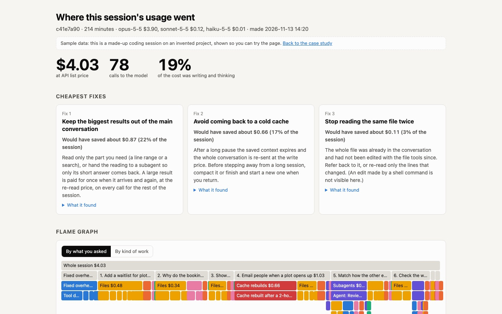
The top of the page for an invented session. Three fix cards, each with an estimated saving: keep big results out of the main conversation, avoid a cold cache, stop reading the same file twice.
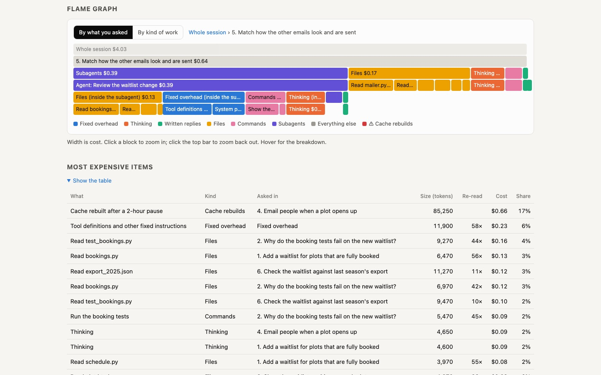
One request zoomed in. A subagent review sits under the call that started it, and the table below ranks the most expensive items, with how many later calls re-read each.
The problem
A long Claude Code session can use a large share of a weekly limit, and the usual view is a single total. It does not say whether the cost came from a file read, a long test run, thinking, a pause that emptied the cache or the fixed prompt that is sent again on every call. Without that there is nothing specific to change.
What it does
Charges every token to its cause: a file read, a command, a subagent, a skill load, a burst of thinking, a written reply, or the fixed overhead that rides along on every call.
Names the cheapest fixes. Up to three cards, each with an estimated saving and the exact files or commands behind it: read part of a file instead of all of it, stop re-reading one, hand a big lookup to a subagent, or compact before a long break.
Draws the session as a flame graph. Width is cost. Group it by what you asked or by kind of work, click a block to zoom in, and hover for the breakdown. A table lists the most expensive items, and subagents sit under the call that started them.
Decisions behind it
The parts add up. Every item's cost is worked out so that together they equal what the session actually used, so a slice of the graph is a real share, not a guess.
Dollars are a yardstick. Figures use list prices so sessions can be compared. On a subscription they show relative usage, not a bill.
Savings are estimates and say so. Each card explains how its figure was worked out, and the cards are not added together because they overlap.
It stays on the computer. It reads the session's transcript and writes one self-contained page.
What it does not do
Small items are sized from their text and scaled to the real counts, so single small items are approximate. The list of tool definitions cannot be itemised from a transcript, so it shows as one block. It says what a session cost, not whether the work was worth it.
How it was built
Built with Claude Code as a skill that Claude can run on any session. I set the rule that the items must add up to the real total; Claude wrote the script and the page. The demo on this site uses an invented session, so no real prompts or files appear in it.
Research and history
Reference works and original research, including medical research.
R1111 / 16Reference work
Byzantium
mosaic atlas
An illustrated encyclopedia of the Eastern Roman Empire, 324 to 1453, built around a mosaic atlas you can drag through 1,129 years and watch the borders move.
The atlas at 1025, near the empire's height. Every tile is a tessera; the panel says who was on the throne and who held what that year.
The atlas
Drawn as a mosaic
Territory is one fixed grid of tesserae, each slightly varied in shade, with grout between them. The empire is imperial purple edged in gold; the sea is blue tile. A Borders mode switches to clean outlines, and light and dark themes each have their own palette.
Conquest you can watch
When borders change, only the tiles that changed owner turn over, in a wave that starts from the conqueror's side, so territory is taken rather than repainted. Cities that change hands send out a ripple.
Built for scrubbing
Drag, click or use the keyboard; play at 1 to 50 years a second; or press Next change to jump to the next year the map moves. Ownership is cached per snapshot and neighbours precomputed, so fast scrubbing stays smooth.
Contested land stays contested
Overlapping claims of more than about 500 km² become hatched contested land instead of being handed to one side. Five places where the source disagrees with history, from Manzikert to 1453, are corrected and explained on the map.
Checked against the source
An automated check confirms zero invalid geometries and zero overlaps across all 200 snapshots, and ten key years match the source to within 1% of land area. Five other map sources were evaluated and rejected, each with a written reason.
More ways in
Compare two years side by side with a draggable divider, switch to a table of powers, toggle cities, battles and campaign routes, and share any view by its URL. Patterns stand in for colour, and reduced motion swaps flips for fades.
Compare mode: two years side by side with a divider you can drag or move by keyboard.
10251204
Drag the divider, or use the arrow keys, to go from 1025 to 1204. After the Fourth Crusade the empire's land is hatched as contested rather than simply recoloured.
The encyclopedia around it
464 entries pinned to fixed Wikipedia revisions with restored footnotes, plus 168 original introductions labelled as such.
1,174 Commons images with author and licence; 41 were left out because their licence couldn't be confirmed.
A guide to all 440 episodes of The History of Byzantium podcast. The build fails if any 12-word run matches the podcast's pages.
87 battle entries, a people index of 1,765, a gazetteer, coins, a primary-source reader for Procopius and Anna Komnene, and a timeline that shares its playhead with the atlas.
Built and verified
React, TypeScript and d3-geo, with Python pipelines for the map geometry: borders from the Seshat Cliopatria dataset, coastlines from Natural Earth, and 96 cities and 71 battles from Wikidata. It ships with 20 slider tests, 60 screenshot checks across phone and desktop, and Lighthouse mobile scores of 93 to 96.
How it was built
One long Claude Code session took it from an empty folder to a verified site. Claude evaluated map sources and their licences, built three data pipelines and the renderer, and wrote its own reports on what failed, what was skipped and where the sources disagree, for me to review.
R1212 / 16Medical research
ME/CFS and Long COVID evidence map
medical research
Thousands of small studies have measured something in people with ME/CFS or Long COVID, and few results have been checked against each other. This project read the whole PubMed literature, pulled out every measured finding with its quote, and graded which ones independent labs have actually replicated.
Research write-up
Abstracts screened
15,923
Studies in the database
1,981
Findings, each with its source quote
7,337
Findings graded strong (ME/CFS / Long COVID)
17 / 33
Brain tissues enriched in the genetics test
11 of 13
The problem
ME/CFS has been studied for decades and Long COVID has added thousands of papers in a few years, but most studies are small and many contradict each other. Nobody had pulled the whole literature into one table that says which findings hold up across independent labs and which do not.
What it does
Extracts every finding from each abstract: what was measured, in whom, against which comparison group, and in which direction, with the sentence it came from.
Grades replication by lab, not by paper, so a group publishing the same cohort five times counts once. Replicated nulls are kept too, such as the 11 of 11 labs that found no XMRV.
Compares the two illnesses side by side. Both show the same circulation and exercise picture: a racing heart on standing, a lower stroke volume and reduced peak oxygen uptake.
Predictions written down first
The replicated findings suggested an immune, vascular and autonomic chain. Before opening any genetic data, the predictions were written down and locked with a file hash, then tested against the open DecodeME genome study with MAGMA gene-set and tissue analysis. The signal sat in the brain: 11 of 13 brain tissues and the pituitary were enriched, which agrees with what the DecodeME team reported themselves.
How it was built
Built with Claude, under my direction, across several long Claude sessions. Claude wrote the search and grading code, ran the extraction in batches of 100 abstracts, audited its own output and ran the genetics pipeline. I directed the work and made the calls along the way, including writing the genetics predictions down before the test.
R1313 / 16Patient tool
Clear Aftercare
patient tool
Discharge papers are written in abbreviations and handed to people who are tired, unwell or 80 years old. Paste them in and get a plain-language care sheet plus a calendar reminder for every dose, task and appointment, with anything unclear marked instead of guessed.
Try the demoThe example and calendar buttons work on this site; reading new instructions runs inside Claude
The input: an emergency department discharge for an 81-year-old with pneumonia, as it would be printed.The care sheet. Eleven gaps, such as "2 times a day" with no clock times, are marked for the patient to fill in or ask about.
What it does
Rewrites, never adds. Abbreviations become plain words, but the prompt forbids adding any medicine, dose, time, duration or advice that is not on the paper.
Flags the gaps: twice a day with no times, a dose in mg with no pill strength, "continue home meds" with no list, a follow-up nobody booked.
Turns on reminders only when they are complete. Calendar buttons switch on once times, start date and number of days are set, with one-click presets such as 8 AM and 8 PM.
Built for the reader: a large-text toggle, a dose checklist, a print view and a rough reading-grade score.
How it was built
Built with Claude as a single page that calls Claude to read the instructions. Claude wrote the page, the prompt, the calendar files and the example, and checked prior work in the field, under my direction.
R1414 / 16Local research tool · Market research
WHITE SPACE
venture research terminal
Find problems people keep describing in public, and check whether a product should exist to fix them. WHITE SPACE reads real complaints from Hacker News and GitHub, groups the recurring ones, and shows every quote with its source before it writes a cited opportunity thesis.
Runs on a computer, not on this site. The screenshots are the real app.
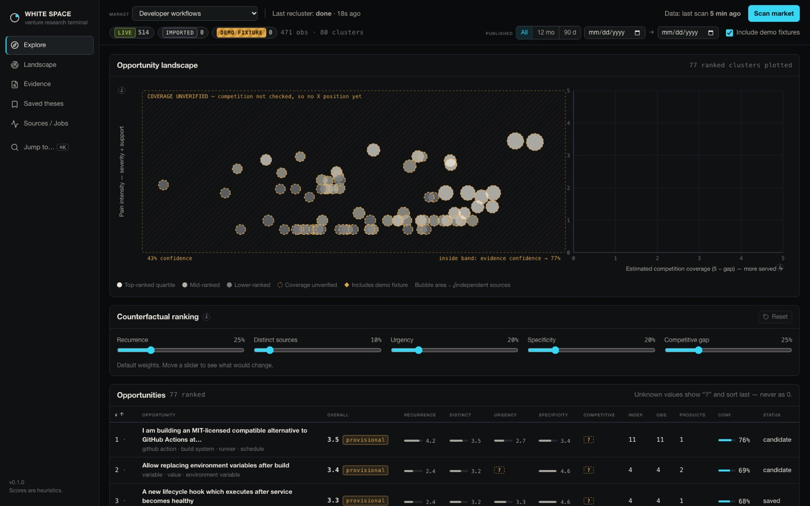
The landscape for the “Developer workflows” market after a scan of Hacker News and GitHub issues: each bubble is a recurring problem, and the table below ranks them. The dashed outlines mean competition has not been checked yet.
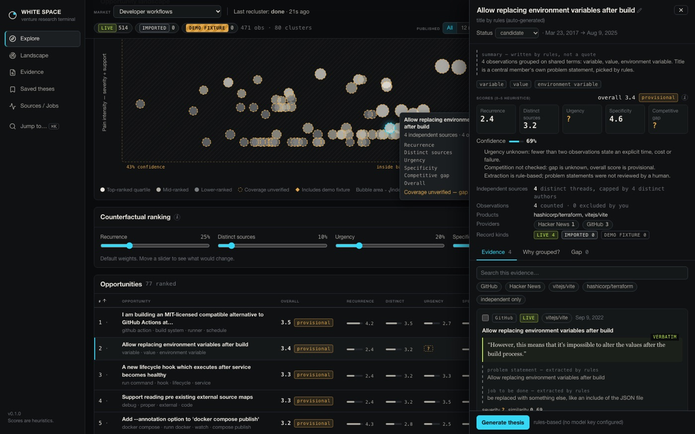
One problem opened up: its scores, how many of the mentions count as independent, and the exact words people used, with a link to each source.
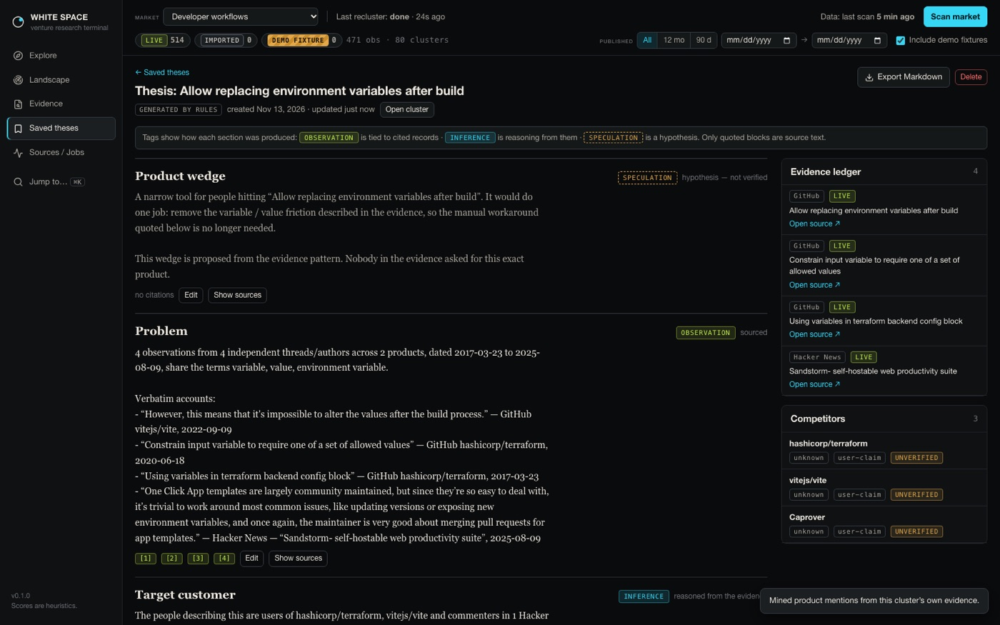
A thesis built from that evidence. Each section is tagged as observation, inference or speculation, and the competitors it lists stay marked unverified until a person checks them.
The problem
Deciding what to build usually starts from a hunch. People do describe what is broken in public, in issue trackers and forum threads, but those complaints are scattered, repeated and hard to weigh. This puts them in one place with their sources attached.
What you can do with it
Scan a market. Pick a market and it reads recent Hacker News threads and GitHub issues, or reviews you import from a CSV or JSON file, removes duplicates and groups the problems people keep repeating.
Read the evidence. Open any problem to see the exact quotes, each linked to its source, and why those records were grouped together. Exclude a record or split the group if it is wrong.
Re-weight the ranking. Five visible scores, and sliders that re-rank the list instantly so you can see what the order depends on.
Check competitors. Add products and mark them verified. Until a person does, the competition score stays “unknown” rather than guessing.
Export a thesis. A written opportunity brief with citations, exported as Markdown, where every section is labelled observation, inference or speculation.
Decisions behind it
Every claim points back to a record, or says it is a hypothesis that has not been checked.
Scores are rules you can see, not a model's opinion, so you can disagree with them.
Nothing is hidden or final. Each step, from evidence to grouping to thesis, can be inspected and undone.
What it does not do
Problems are grouped by shared words, so paraphrases can be missed and unrelated ones can be lumped together. The scores are rough heuristics, not market size or proof that anyone would pay. It runs locally for one person, and developer communities are over-represented in what it reads.
How it was built
Built with Claude under my direction, which wrote the app, the scoring rules and the export, and kept a written record of the decisions and limits along the way.
R1515 / 16Command-line tool · Automation
Standing Orders
session to shell script
Turn a finished Claude Code session into a shell script you can read, edit and run again with no model. It keeps the commands that did the work, writes a bash script with the inputs at the top, and stops at the first failed step with a note to hand back to Claude.
A command-line tool for a computer, not part of this site. The pictures below are its real output.
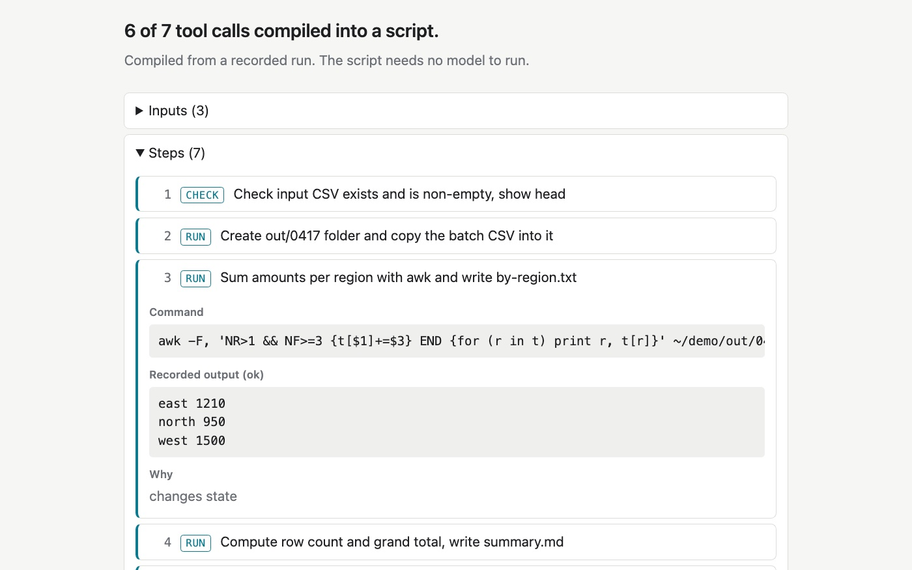
The report that comes with every script. Each step is listed with what it does, the command, and the output recorded when Claude ran it. Steps that were only looking around are marked and left out.
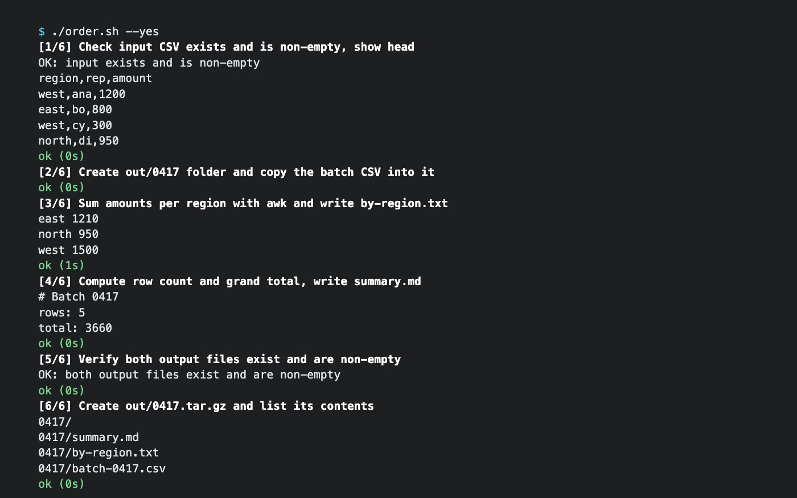
The compiled script run in a terminal with no AI model. Each step prints what it did and stops the run if it fails.
The problem
When Claude does the same job for the third time, it spends time and money rediscovering the same commands. A mechanical job like that does not need to be thought through again, it needs to be run again, and run in a way you can read.
What it does
Reads a finished session. It takes the saved transcript of a Claude Code session and keeps the commands that did the work.
Leaves out the looking around. Commands that only read, and calls that failed, become comments. The report says what was kept and what was dropped.
Writes a plain bash script with the inputs at the top, such as a batch number or a folder, so you can change them without touching the steps.
Stops where it fails. The script halts at the first failed step and writes a short note about that one step, ready to hand back to Claude.
What happened when it was tried
On a recorded agent run that processed a sales batch, the script produced output identical to the agent's. It ran again with a new batch number, and it stopped at the first step when its input file was renamed.
What it does not do
It is a command-line tool that runs on my own computer, not released or hosted. Only mechanical sessions compile well: if Claude read something and decided what to do next, the script keeps the result but not the reasoning. Commands are replayed as recorded, so read the script before you run it.
How it was built
Python, standard library only, with no model used when it compiles or when the script runs. Built with Claude under my direction, from a written spec, and checked against a recorded run.
R1616 / 16Medical evidence check
Trauma guideline citation audit
evidence check
Military trauma guidelines tell medics and surgeons what to do, and each recommendation cites a paper. This audit checked whether the cited papers say what the guidelines claim, and found reference lists whose numbers had slipped out of line.
Research write-up
What it found
Shifted reference numbers. In the pain, anxiety and delirium guideline, 24 of 27 wrong-topic citations fit the entry two numbers later, so the in-text numbers look keyed to a different list. The TBI neurosurgery guideline shows a shift of one in its later references.
Smaller slips elsewhere: two swapped references in one guideline and a reference reused for every cross-reference in another.
56 specific citations are listed for a person to confirm by opening the PDF and reading the two entries.
Decisions behind it
Lead with what anyone can check. A shifted reference number is verifiable in minutes, so it is the headline, not a subjective "does this paper support it" grade.
Distrust the big number. AI grading flagged about 38% of citations as unsupported, but that fell to 18% when the full paper was available instead of the abstract, so it is reported as a likely overestimate.
Second opinion, labelled as such. ChatGPT re-graded 150 items and agreed closely with Claude (kappa 0.76).
How it was built
Built with Claude under my direction. Claude downloaded the guidelines, extracted every cited statement, matched each reference to PubMed, graded support and ran the reference-shift test; ChatGPT did the second-model check. The result is a list of specific, correctable errors in these guidelines.